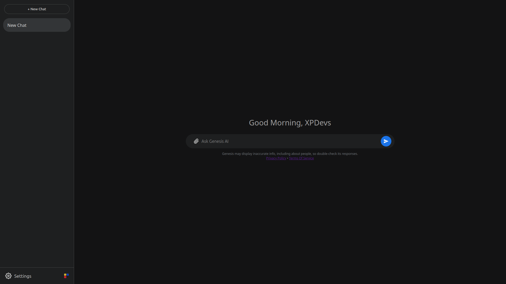

An experimental, web-based artificial intelligence platform created by XPDevs.
Launch Genesis-AI
Genesis-AI is an experimental, web-based artificial intelligence platform created by XPDevs. It represents a new approach to lightweight AI design — replacing traditional machine learning models with a custom binary format and human-readable JSON files that define the AI’s core behavior.
While its foundation is a lightweight, rule-based system, it also integrates dynamic features like on-demand image generation, text/image analysis, and real-time Wikipedia lookups, all running locally in your browser.
Unlike other systems that require users to install software, manage APIs, or process data on remote servers, Genesis-AI runs entirely within the web browser. Users simply visit the website and begin interacting instantly, with no downloads, no setup, and no external dependencies.
This project exists to explore how far simplicity can go — proving that AI-like systems can be built using structured logic, static content, and an accessible web interface.
The purpose of Genesis-AI is to:
Genesis-AI is experimental. Because it uses a structured response system rather than a large language model for its core chat, it may not always:
It is designed primarily for demonstration, testing, and creative experimentation — not production-level use. Users are encouraged to explore its logic, test boundaries, and contribute ideas for improvement.
Genesis-AI functions entirely on client-side code, meaning:
The JavaScript engine decodes the modal, performs advanced pattern matching against user input, and can combine multiple relevant responses. It also recognizes special commands (prefixed with @) to trigger advanced modules like image generation or analysis. For general knowledge questions, it can query Wikipedia and summarize the results, providing a much broader knowledge base than the static modal alone. This method removes the need for neural processing for core chat while keeping every behavior transparent to the public.
Genesis-AI supports special commands prefixed with @ to unlock advanced functionality.
| Command | Example | Description |
|---|---|---|
| @img | @img a futuristic city at sunset | Generates a 1024x1024 image based on the provided text prompt. |
| @ImgAuth | @ImgAuth (with an image uploaded) | Analyzes the uploaded image to determine if it was generated by AI. |
| @txtauth | @txtauth This text seems very formal... | Analyzes the provided text for patterns common in AI-generated content. |
To use these, simply type the command into the chat box. For @ImgAuth, you must first upload an image using the attachment button.
Genesis-AI provides a clean, minimal interface built for focus and accessibility. The chat layout adapts dynamically, offering:
This design approach reflects XPDevs’ principle of simplicity — removing unnecessary clutter and keeping interactions smooth, readable, and human.
There is no setup required. To access Genesis-AI, simply open the official website:
Once the page loads:
If a response cannot be generated, an appropriate error message will appear (see below). Because everything is handled in-browser, you can close or refresh the page at any time without data loss or security risk.
Genesis-AI is structured around a three-layer design:
| Layer | Description |
|---|---|
| Frontend (UI) | HTML/CSS layout built for responsiveness and simplicity. |
| Logic Engine | JavaScript handler that decodes modals, manages state, and selects appropriate responses. |
| Model (Modal) | Compressed binary (.bin) or JSON files that define the AI's knowledge base and responses. |
This structure separates presentation, logic, and data, allowing developers to update each component independently without breaking the overall system.
While the primary distribution format is a compressed binary (.bin) for performance, the source of this binary is a human-readable JSON file. This allows developers to easily define and extend the AI's behavior. A simplified example might look like:
{
"ver": "Genesis-SPT-1.0",
"hello": "Hello there! How can I help you today?",
"who are you": "I'm Genesis-AI, an experimental web-based intelligence by XPDevs."
}When a user sends input, the system checks for matching keys or patterns in the JSON and returns the corresponding value. If none are found, the fallback handler displays a general error message.
This makes Genesis-AI easily expandable — developers can create new modals (such as Genesis-SPT-2.0) by editing or extending these files.
Genesis-AI includes built-in feedback for specific conditions. These messages help users understand what has gone wrong and how to fix it.
Message: “This message violates AI safety and use policies. Please try again.”
Meaning: Triggered when the user’s input contains a banned or unsafe term. Genesis-AI automatically deletes the unsafe input and blocks the response to maintain a safe environment.
Suggested Action: Avoid sending restricted or unsafe content. Continue chatting normally after the alert.
Message: “I’m not quite sure I follow. Could you give me a bit more detail?”
Meaning: A general fallback message shown when Genesis-AI cannot find a valid response or understand the input. This is the most common error message during normal use.
Suggested Action: Try rephrasing the question or simplifying your message.
| Error Message | Meaning | Suggested Action |
|---|---|---|
| This message violates AI safety and use policies. | Unsafe or banned input detected. | Remove restricted words and retry. |
| I’m not quite sure I follow. Could you give me a bit more detail? | The AI couldn’t generate a response. | Rephrase or simplify your message. |
Genesis-AI prioritizes privacy:
This ensures a completely private and ephemeral experience.
XPDevs implements multiple layers of content safety:
These precautions help maintain a responsible, safe, and transparent AI environment.
Genesis-AI follows three principles that define XPDevs software design:
These ideas shape both the interface and the technology behind Genesis-AI.
By using Genesis-AI, you agree to the following official documents:
These policies explain how Genesis-AI operates, including acceptable use, safety rules, and privacy standards.
For information, suggestions, or inquiries: Visit the XPDevs official website for updates, contact options, and related projects.